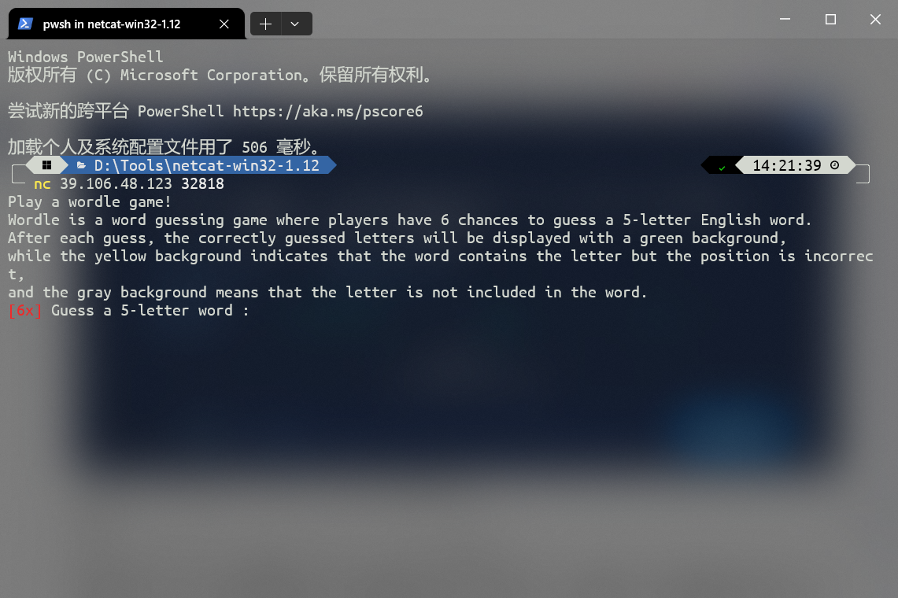
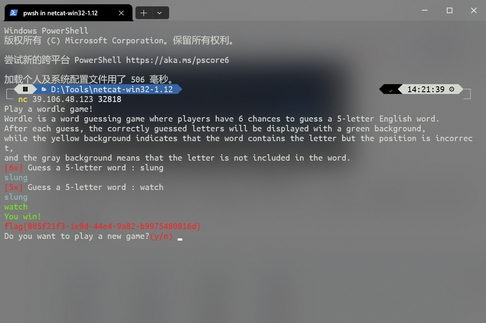

题目描述
做题累了,不如跟小楠楠起来玩个wordle游戏， 边玩边学英文，一举两得。 (纯游戏,通关即拿flag)
Wordle游戏（纯纯玩游戏，通关就给flag）
解题
nc命令可以在kali中直接使用，若想在windows中使用需下载netcat
连接后

翻译：
Worldle是一款猜谜游戏，玩家有6次机会猜出一个5个字母的英语单词。每次猜对后，猜对的字母将以绿色背景显示，黄色背景表示单词中包含该字母，但位置错误，灰色背景表示该字母不包含在单词中。
技巧：仅供参考
slung watch bedim proxy
chief balmy swung dropt
grown pylas bedim kutch
unfix embow stack glyph
fakir compt vends bulgy
depth smirk bacon gulfy
divot whack flung sperm
furzy blive swamp noght
farce width glump bosky
perch unbox swift glazy
hexad truck filmy spong
can't hiems budgy flowk
whist pored mucky flang
quern sixth clomp gawky
skied foxly whang crumb
glode barky chump snift
pyxle round might backs
gloam twink fuchs predy
spied brawn foxly kutch
shrub aztec flowk dying
ruble potch mawks dying
modal quegh swink crypt
sprew batch dungy jolif
fishy zante drock plumb
shrag oxfly unbid kempt
chips flunk grove bawdy
grise han't flock dumpy
chirk bawdy spent mogul
shuck bigot predy flawn
lobed stump finch jarvy
tewan pilch fjord busky
dwelt bunch favor skimp
emyds virtu bhang flock
plant shock refix budgy
thumb eland grovy spick
siker bawdy potch flung
segno thump dicky brawl
braky medoc whisp flung
dansk trump elbow chivy
amzel whist frock pudgy
those bulky dwang crimp
sider potch flung mawky
cetin ampyx shrug flowk
batch mured gipsy flown
成功后将会直接给我们flag。
flag{805f21f3-1e9d-44e4-9a82-b9975480816d}
